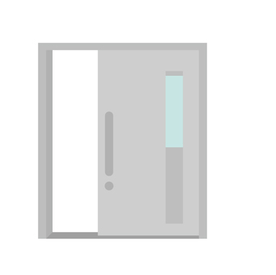

コンピュータウイルスとは
経済産業省の定義によると、コンピュータウイルスは 第三者のプログラムやデータベースに対して意図的に何らかの被害を及ぼすように作られたプログラムのことです。
ウイルスといわれると得体の知れないものに感じられますが、単なるプログラムです。 挙動がウイルスと似ているのでコンピュータウイルスと呼ばれます。
経済産業省の「コンピュータウイルス対策基準」によると、3つの基準のうちどれかを満たせばコンピュータウイルスといえます。
自己伝染機能
潜伏機能
発病機能
トップへ戻る
